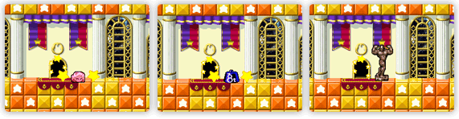

細かなこだわりはたくさんあるんですが、例えば、私はストーンの変身を見てもらいたいです。ストーンの能力を使う時に、カービィが変身するんですが、いろんな形に変身するんです。
旧作でもすごい低い確率でしか出すことができないレアなストーンがあって。そういうものも残しつつ、さらに色々と仕込んでいます。自分も旧作ではレアなストーンが出るまで、ムキになって変身し続けたことを覚えています。だからここにはこだわってます！！白川さんはどんな形が好きですか？

ストーンはあまり使いませんので…
でも金色のマ○オ像とか出ちゃったりすると興奮しませんか？
…
あまり興味なさそうですね…
ごほうびとまではいきませんが私一押しはやっぱりムービーですかね。
そうですね、今作ではストーリーを盛り上げるために3Dムービーを追加しています。
ですが、そちらに時間と労力をかけすぎて、ゲーム本編のシナリオがちょっとだけになったり、ゲームのテンポが悪くなれば本末転倒なので、ムービーはあくまでストーリーを盛り上げ、演出する立場として考えています。なので、ムービーの数に負けないよう、アクションゲームとしてもしっかり作っています。
あとはあるシナリオでプレイを止めてオープニングを見ると、実はカービィじゃなくて、ある人がオープニングに登場したり…。
本当にハル研さんのそういうこだわりはすごいんです。
でも何かもらえたり、変化があるのも嬉しいのですが、個人的には今回に関してはどんどん新しいシナリオが開いて、いろいろなカービィを楽しめること自体がごほうびだと思ってますけどね。
あとごほうびじゃないですが、今回は旧作よりもいろいろ自分の記録を残せるようになっています。ハイスコアを狙える要素があることで、再挑戦性が生まれてある意味ごほうびではないかと思っています。